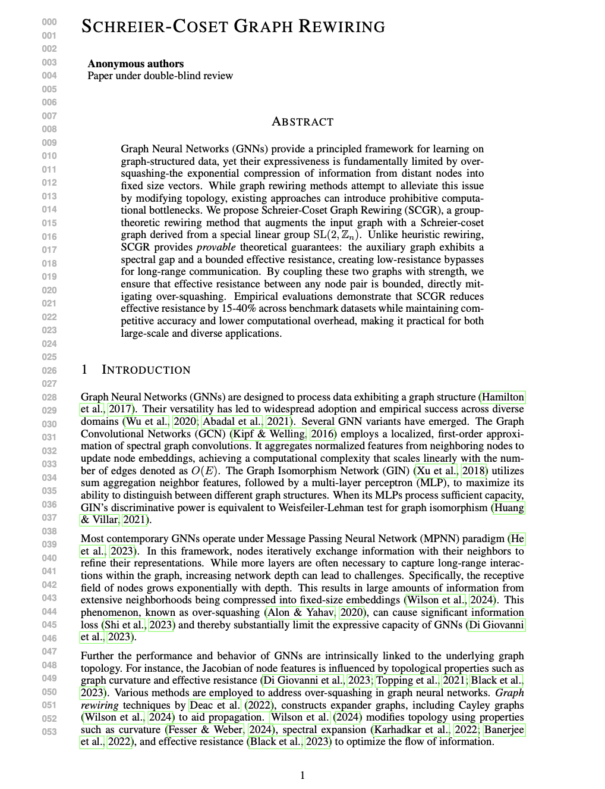

|
Aryan Mishra I am Aryan, a Ph.D. student in Statistics at the University of Maryland, where I am fortunate to be advised by Dr. Lizhen Lin. Previously, I worked at the NIST. I also hold a Master of Engineering in Robotics from MAGE program. Email / Linkedin / Scholar / Twitter | X / Github |

|
ResearchI'm interested in Graph Informational Flow, Geometrical Deep Learning and Statistical Analysis. |
|

|
Schreier-Coset Graph Rewiring (SCGR)
Aryan Mishra, Lizhen Lin Under review project page / PDF We propose Schreier-Coset Graph Rewiring (SCGR), a group-theoretic method that provably mitigates over-squashing in GNNs by creating low-resistance pathways for long-range information flow. |